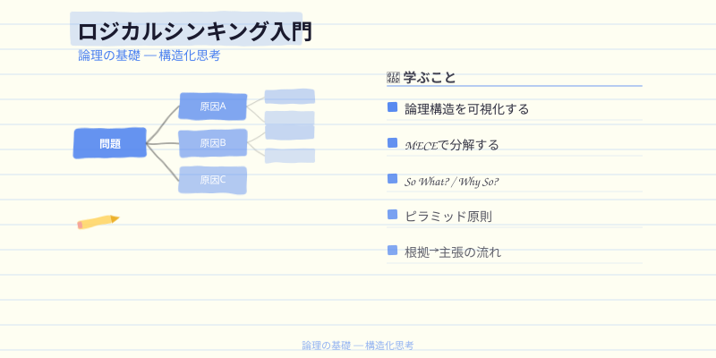
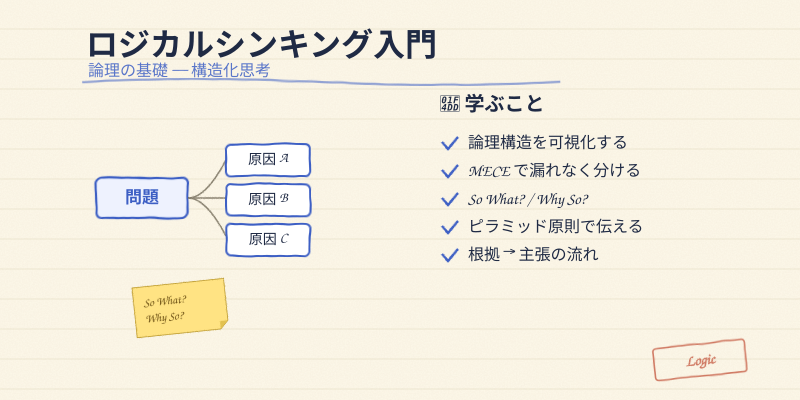
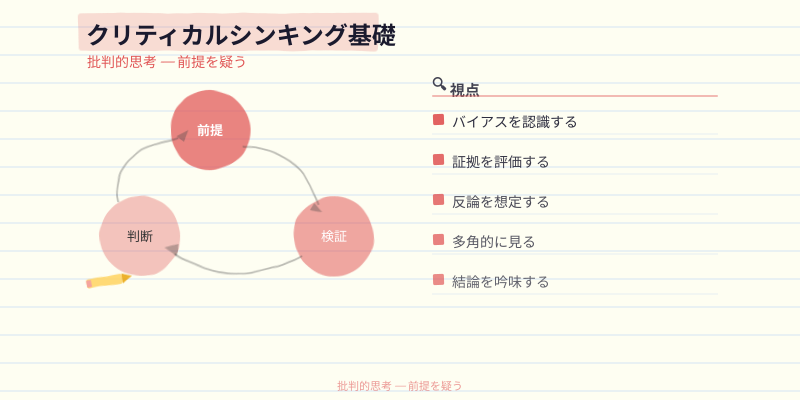
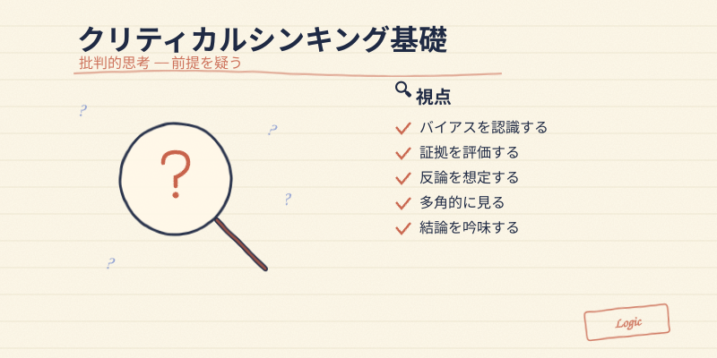
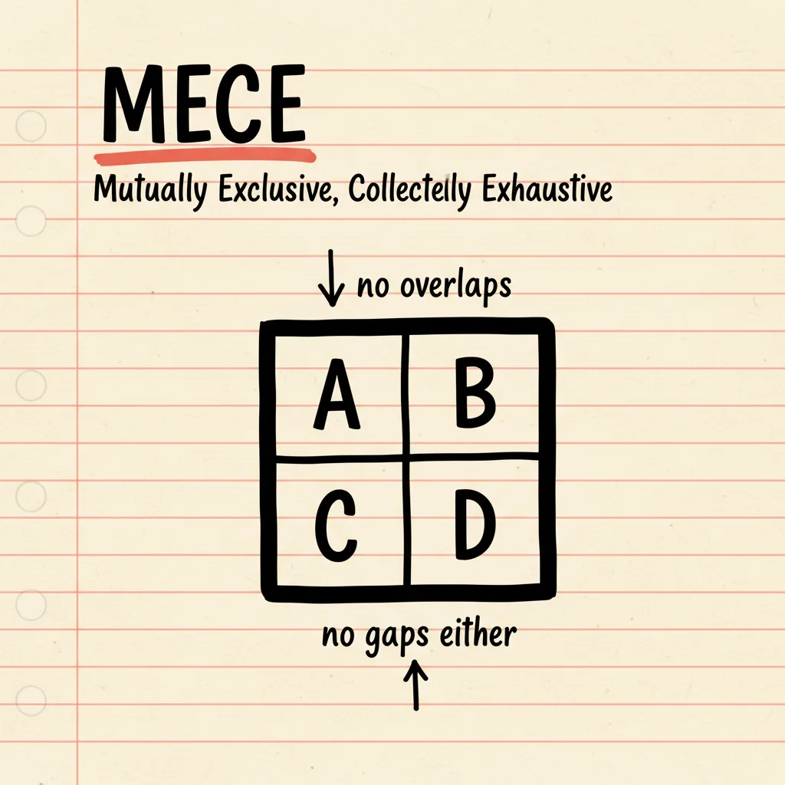

Logic Handdrawn Style — Pilot Preview
2026-05-12 / designer (凜) / 比較用
注: 下の "After" は SVG をブラウザでネイティブレンダリングしている (webfont 効く)。
PNG ファイル (*-v2.png) はサーバーレンダリングでフォントフォールバックが起きる可能性がある。
本番アプリでも SVG のまま使うので、ブラウザレンダリングの結果 = 本番表示に近い。
1. course-logic-01「ロジカルシンキング入門」

Before 現行 (course-logic-01.svg)

After v2 パイロット (course-logic-01-v2.svg)
- 紙テクスチャを overlay で追加（生成り感アップ）
- 罫線を青系 → ベージュ系に変更（よりノート感）
- 図解の鉛筆風枝（path Q カーブ + inkBleed フィルター）に
- リスト項目を「四角チェック」→「手書き ✓」に
- 付箋（So What? / Why So?）を新規追加
- 右下に控えめなブランドスタンプ追加
2. course-critical-01「クリティカルシンキング基礎」

Before 現行 (course-critical-01.svg)

After v2 パイロット (course-critical-01-v2.svg)
- 3 つの重なる円（抽象的）→ 虫眼鏡（具象的・批判的思考の象徴）
- レンズ内に大きな「？」、レンズ外に小さな「？」3 つ（思考の連鎖）
- 取っ手は朱赤と濃紺の二重線で手描き感
- 背景は他のサムネと統一（紙＋罫線＋紙テクスチャ）
参考: 既存の差し替え必須 WebP
NG course-business.webp (写実写真、方針外)

NG lesson-20.webp (ダーク背景、方針外)
詳細: docs/HANDDRAWN_STYLE_GUIDE.md / docs/HANDDRAWN_ROLLOUT_PLAN.md